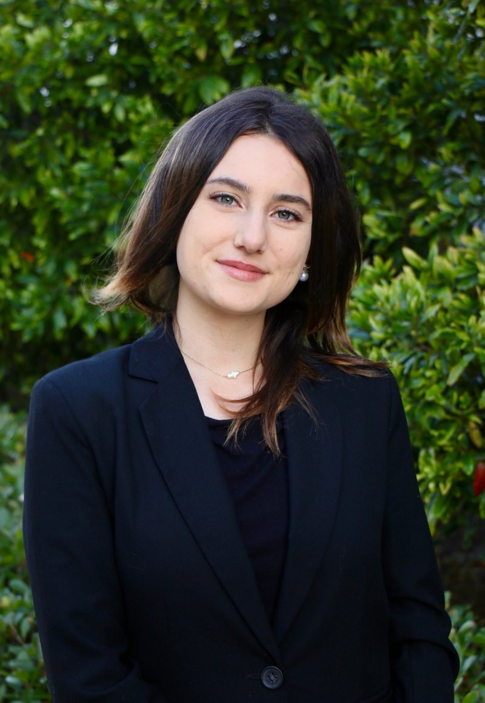
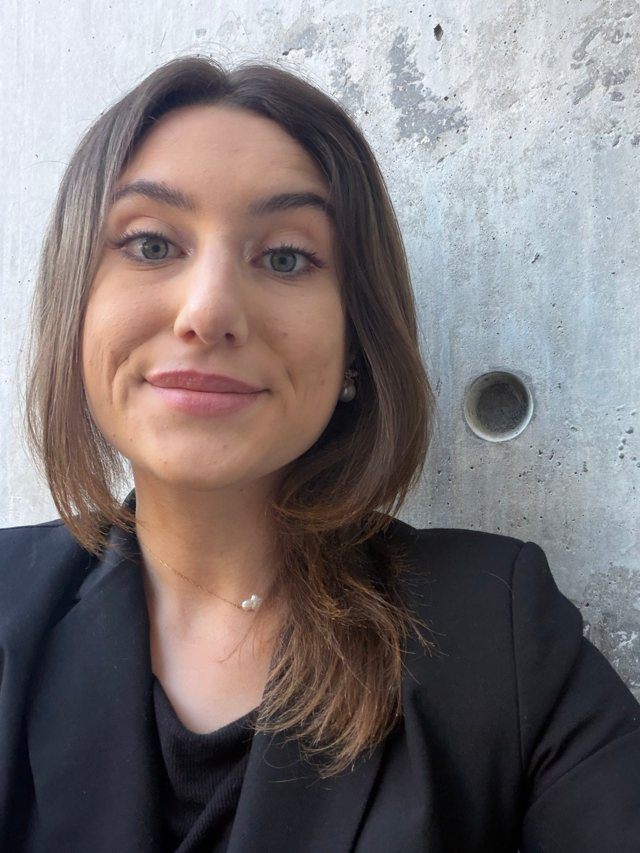

I study Communications and Economics at UC Santa Barbara (class of 2028). I'm interested in how people connect with each other, and how artificial intelligence is changing that. On the economics side, I love studying how markets shift and change. I'm a proud economics nerd.
Most of my work so far has been qualitative research: interviews, transcripts, and finding the story in the data. I also like marketing, public speaking, and working on a good team.

B.A. Communications & Economics · class of 2028
Classes I've taken: Social Theory, Communication Theory, Microeconomics, Macroeconomics, Statistics, Calculus, and the Capstone Research Program.
Senior Honors Program, independent research · publishing Spring 2027
A study I designed and am leading in the UCSB Communications Department, looking at how artificial intelligence affects the way people connect. I work one-on-one with faculty in the department.
Google Scholar, AI research tools
Communications Department, UCSB
I annotate, transcribe, and review literature for several empirical studies, and use AI tools to pull out findings and correlations. I plan deliverables with our graduate student lead and the other RAs.
Claude, Heptabase, Word, Box
Research collaboration with UC Berkeley
Qualitative market research on plant-based dining. I scheduled and led interviews with tourist boards across the U.S., analyzed what they told us, and presented the findings to Vegan Hospitality to help shape their business strategy.
what we found:real interest in plant-forward dining resources. I earned a Certification of Research.
Case competition, UCSB
Our team planned a productivity app that uses AI to organize your schedule. I built it in Base44, and we presented it to a panel of UCSB-affiliated judges.
American Marketing Association case competition
We partnered with a local restaurant and wrote a social media marketing plan the owners could follow for the next quarter.
UC Santa Barbara · 2025 to now
Agua Hedionda Lagoon Foundation, San Diego · 2023 to 2024
Case Assistant
I help members through quarterly business projects with feedback and one-on-one check-ins, and host workshops on marketing, LinkedIn, and finance. The point of my role is to help other members grow in a constructive way.
Designated Notetaker, 4 courses
I take clear lecture notes for students who need them and upload them to the DSP database.
Member
Meetings with alumni and marketing professionals, plus projects with Santa Barbara businesses.
I'm looking for research, marketing, and communications opportunities. Email is the best way to reach me.
